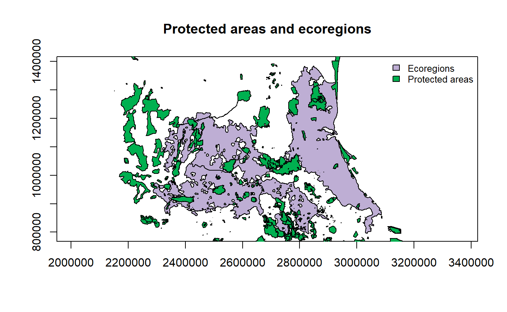
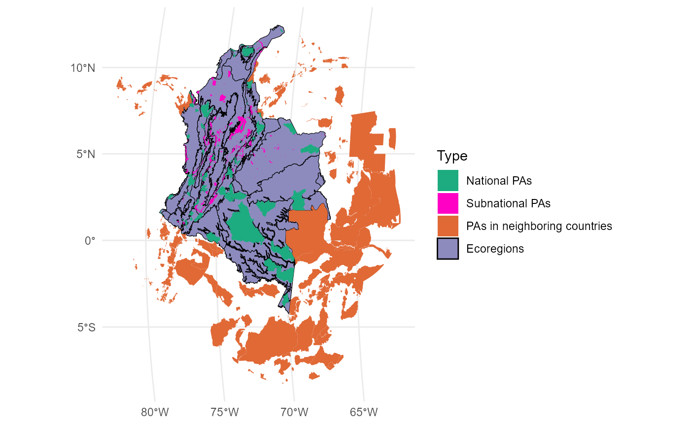

We will explore the ProtConn indicator which was developed to report international conservation targets (Saura et al. 2017), the indicator offers you an analysis of protected areas connectivity for a particular region.
- Loading data (two ecoregions and one set of protected areas, both shapefiles):
#Protected areas data("Protected_areas", package = "Makurhini") #Ecoregions data("regions", package = "Makurhini")

- ProtConn only one ecoregion using two distance thresholds (median distance) and a connection probability of 0.5.
region <- regions[1,] test.1 <- MK_ProtConn(nodes = Protected_areas, region = region, attribute = "Intersected area", area_unit = "ha", distance = list(type= "centroid"), distance_thresholds = c(50000, 10000), probability = 0.5, transboundary = 50000, LA = NULL, plot = TRUE, dPC = FALSE, write = NULL, SAGA = FALSE, intern = FALSE)
Result 50 km:
test.1$d50000 #> $`Protected Connected (Viewer Panel)` #> #> $`ProtConn Plot`

Result 10 km:
test.1$d10000 #> $`Protected Connected (Viewer Panel)` #> #> $`ProtConn Plot`

- Using the two ecoregions (or ideally more regions):
test.2 <- MK_ProtConnMult(nodes = Protected_areas, regions = regions, attribute = "Intersected area", area_unit = "ha", distance = list(type= "centroid"), distance_thresholds = 10000, probability = 0.5, transboundary = 50000, plot = FALSE, write = NULL, intern = FALSE)
Table summary result:
test.2$ProtConn_10000$ProtConn_10000 #> Simple feature collection with 3 features and 19 fields #> geometry type: MULTIPOLYGON #> dimension: XY #> bbox: xmin: 2287307 ymin: 792114.5 xmax: 3085667 ymax: 1392441 #> epsg (SRID): NA #> proj4string: +proj=lcc +lat_1=17.5 +lat_2=29.5 +lat_0=12 +lon_0=-102 +x_0=2500000 +y_0=0 +datum=WGS84 +units=m +no_defs #> OBJECTID EC(PC) PC Unprotected Prot ProtConn ProtUnconn #> 1 61 130189.18 1.2324e-03 92.540 7.460 3.511 3.950 #> 2 143 53905.28 8.4479e-05 97.574 2.426 0.919 1.507 #> 3 772 186133.41 7.4315e-04 94.773 5.227 2.726 2.501 #> RelConn ProConn_design ProConn_Bound ProtConn_Prot ProtConn_Trans #> 1 47.058 3.950 3.511 97.512 0 #> 2 37.882 1.507 0.919 96.251 0 #> 3 52.150 2.501 2.726 99.588 0 #> ProtConn_Unprot ProtConn_Within ProtConn_Contig ProtConn_Within_land #> 1 2.488 94.784 2.728 3.327 #> 2 3.749 93.493 2.757 0.859 #> 3 0.412 97.011 2.577 2.645 #> ProtConn_Contig_land ProtConn_Unprot_land ProtConn_Trans_land #> 1 0.096 0.087 0 #> 2 0.025 0.034 0 #> 3 0.070 0.011 0 #> geometry #> 1 MULTIPOLYGON (((2553705 100... #> 2 MULTIPOLYGON (((2745325 859... #> 3 MULTIPOLYGON (((2973030 103...
Shapefile result
test.2$ProtConn_10000$ProtConn_overall_10000 #> NULL
Moreover, you can change distance using the distance ( distancefile () ) argument:
Euclidean distances: * distance = list(type= “centroid”) * distance = list(type= “edge”)
Least cost distances: * distance = list(type= “least-cost”, resistance = “resistance raster”) * distance = list(type= “commute-time”, resistance = “resistance raster”)
Reference:
- Saura, S., Bastin, L., Battistella, L., Mandrici, A., & Dubois, G. (2017). Protected areas in the world’s ecoregions: How well connected are they? Ecological Indicators, 76, 144–158.